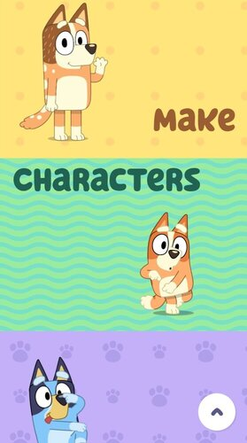
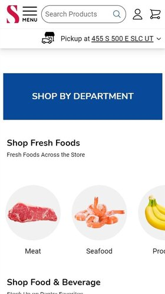

Contrast
Bluey
bluey.tv Bluey shows great contrast with its bright colors, distinct lettering, fun images and backgrounds.
Hick's Law
Smith's
smithsfoodanddrug.com Smith's demonstrates Hick's law by having an organized menu that allows the user to chose categories and search for specific information but not feel overwhelmed.
Fitt's Law
Cody Fry
codyfry.comCody Fry's website has a button close to the action element, latest release, and is easy to see. The user is able to click the button to listen or purchase his music. They don't have to search all over the website for it.